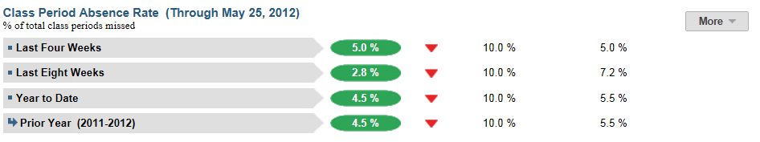
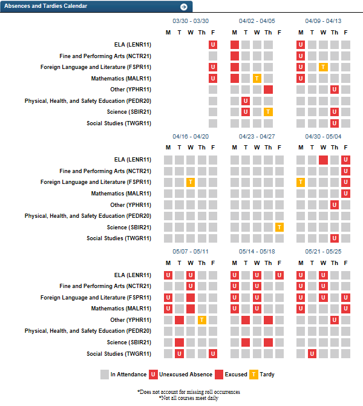
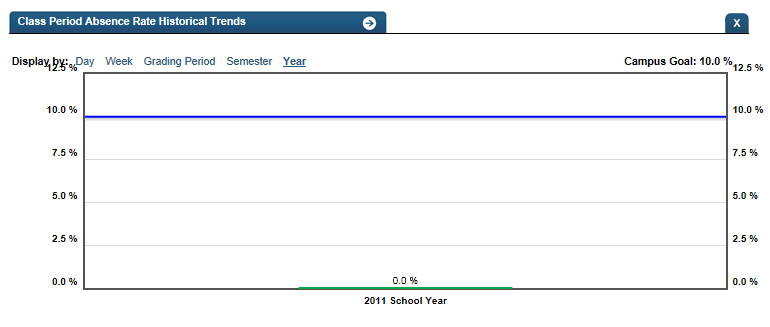

Dashboard Metrics


Class Period Absence Rate
Background
Student Dashboard Metrics
Because of the value of attendance as a key leading indicator of student performance, virtually every performance management dashboard should include a measure of student attendance. This need was echoed in focus groups conducted with educators, in which attendance was consistently named as one of three top student data needs. Further, the Class Period Absence Rate metric, as presented in screen shots of the student dashboard, was considered useful by 96% of those surveyed.
Primary Metric
- Class Period Absence Rate: the percent of class periods a student is in attendance during the last four weeks, last eight weeks and the entire year to date, with comparison to campus goal for each time frame.
Related Metric
- Daily Attendance Rate: the percent of days a student is in attendance during the last four weeks, last eight weeks and the entire year to date, with comparison to campus goal for each time frame.
User Interface
Dashboard Example
Figure 1 shows the Class Period Absence Rate metric as seen on the student dashboard.

Figure 1 Ed-Fi Class Period Absence Rate Metric
Visibility Rules
The metric is grayed-out if any of the following apply:
- Daily attendance is not loaded for the first four weeks
- Attendance data does not exist
Status Definition
The Status indicator is determined by campus-specific thresholds (campus goals) which are set at the district level. The default thresholds set in the Ed-Fi dashboards for each time frame are 10%.
Metric Indicator | Trend Comparisons | |||
Metric Name | Sub-metric Name | Metric Indicator | Compares: | To: |
Class Period Absence Rate | Last Four Weeks | Red (Percentage) = if class period absence rate is greater than campus goal Green (Percentage) = if class period absence rate is less or equal to the campus goal | Last four weeks Begins 40 days into school year with no overlapping days | Prior four weeks |
Last Eight Weeks | Red (Percentage) = if class period absence rate is greater than campus goal Green (Percentage) = if class period absence rate is less than or equal to the campus goal | Last eight weeks Begins 80 days into school year with no overlapping days | Prior eight weeks | |
Year to Date | Red (Percentage) = if class period absence rate is greater than the campus goal Green (Percentage) = if class period absence rate is less than or equal to campus goal | Current Year | Prior Year | |
(a) The Value column displays the number of class period absences.
Periodicity
Best practice is to upload the data for this metric daily.
Recommended Load Characteristics | |
Calendar | Throughout the school year |
Frequency of data load | Daily, Weekly, Monthly |
Latency | 4 weeks |
Interchange schema | Interchange-StudentAttendance.xsd |
Tooltips
The standard tool tips for the metric definition, column headers, and help functions display for this metric.
The following are tooltips specific to the Class Period Absence Rate metric:
- '+More' indicates drill down to view ‘Absence Calendar’
Business Rules
The Class Period Absence Rate metric displays the percentage of class periods a student has missed out of the total number of eligible class periods for that student over the following time frames:
- Last Four Weeks
- Last Eight Weeks
- Year to Date
When calculating this metric, do not count tardy or early release occurrences.
The length of the time frames are configurable and are defined by the district.
Data Assumptions
- Campus must record student absences at the classroom level for each specified time frame.
- Class period absence rate is meaningful only for those grades where students have more than one class period.
- Student absences are categorized (e.g. excused, unexcused).
- Student excused absence reasons are recorded.
- District sets the value that drives the campus and student status thresholds.
- For the detailed views of this metric, the Ed-Fi dashboards do not account for students who missed roll call.
- Data is based on the last 20 and 40 instructional days.
Computed Values
Table 4 defines how values are calculated for each time frame. The result of the calculation displays in the Status column on the student dashboard.
Metric Values | ||
Class Period Absence Rate | Last Four Weeks | (Student excused class period absences + student unexcused class period absences) / (Total number of class periods for a student in last four weeks) |
Last Eight Weeks | (Student excused class period absences + student unexcused class period absences) / (Total number of class periods for a student in last eight weeks) | |
Year to Date | (Student excused class period absences + student unexcused class period absences) / (Total number of class periods for student for school year to date) | |
Calculation Notes
- This metric is calculated only for students who are currently enrolled.
- Days a student is not enrolled are subtracted from the “Total Number of Instructional Days” in the denominator.
- If current time frame is the first occurrence of the time frame of the school year, the previous time frame is grayed-out.
- In addition to the percentage of total class periods missed, developers may also display the total number of days missed.
- If roll is not taken in early grades (Pre-K/K), the Class Period Absence Metric cannot be calculated.
- If there is a day when no students are absent, count the date as "no school."
Data Anomalies
Anomalies
- Metrics are sensitive to when and how often the data is loaded.
- Late enrollees are likely to be missing attendance and discipline data. The calculation for the metric value is not dynamic. However, detail views on class period absences will display more information.
- If the school calendar changes, then adjust the denominator to reflect eligible days.
- Create an icon (not implement) that shows if data was last data loaded was more than a month ago.
Best practice is to use footnotes to address these anomalies.
Footnotes
Footnotes are used to provide additional information concerning the metric. Footnotes are sequential for the entire page. Therefore, a metric's footnote may not begin with the number 1.
The following footnotes appear below the metric:
- Students transferring in that have not been present for a full grading period should be noted by a designated icon.
- If the school calendar changes, then adjust the denominator to reflect eligible days.
Date of Refresh
Best practice is for the date of last data refresh to appear next the metric in the following format:
- (Through April 22, 2010)
Implementation Considerations
Student Identity
Maintaining a correct and consistent student identity is at the center of any education data system. Most systems use some sort of unique identifier. However, sometimes this identifier is entered incorrectly or sometimes different systems use different identifiers.
The UDM XML supports the interchange of multiple types of identifiers. The StudentReference is a complex type within the UDM to maintain the referential integrity of the student (that is, ensuring that the data associated with each student is accurately associated with the right student). The complex type of the student reference assists with implementing the accurate matching algorithm to identify a student by utilizing any of the individual attributes (e.g., Student Unique State ID, Student ID, Campus Local ID (with Campus ID), Name and Birth Date). For example, if the Student Unique State ID is unknown, you can find the student’s identity by their Student ID, First Name, Last Name and Birth Date.
Late Enrollments
For late enrollment students, adjust the number of instructional days in a time frame to reflect eligible days. Specifically, subtract the number of instructional days in a time frame (i.e., last 4 weeks, last 8 weeks, or year-to-date) the student was not enrolled.
Classification of Days as Non-Instructional Days
For the computation of the number of instructional days, use either the total count of instructional days in a period or the school calendar to identify specific instructional days for the time frame as the denominator for the percentage. The latter is a more accurate approach to calculating the metric with the caveat that this requires frequent uploading of data throughout the school year.
Types of Absences
It is important to determine what your Student Information System (SIS) captures for the absence types and absence reasons. The type of absences, also known as Attendance Event Descriptor, captured in the SIS consists of tardy, excused, or unexcused absences.
For example, the Ed-Fi dashboards default for this metric uses excused and unexcused absences. The reason is displayed for excused absences (see Drill Down section). Tardy occurrences are measured as a separate metric.
Students with No Absences
When taking roll at the classroom level, campuses typically record student absences, but do not record if a student is present in a class. The query to compute student absences needs to account for students with perfect attendance, which results in null absences.
Number of Instructional Classes
The Number of Instructional Classes data element varies by student and may vary by semester. The most accurate method is to count the actual number of classes a student is enrolled in each time frame.
Class Subject Information
The displayed subjects for the classes are dependent upon local categorization in the district information sources. Alternatively, developers can display the class title with or instead of the subject.
Frequency of Uploading Data
The metric computation implementation may vary depending on the periodicity of loading the data. For example, a daily load requires that you load data for only a single day (i.e., the last instructional day). Less frequent uploads require that you load data for each day since the date of the last load.
Length of Time Frames
The choice of four and eight weeks and year to date in the Ed-Fi dashboards is based on educator input, but the length of each time frame is configurable at the district level.
Trend
The metric assumes that only the current year’s daily attendance data is loaded. In this case, if the current time frame is the
- first time frame, there is no trend for current time frame and no trend for previous time frame.
- second time frame, there is no trend for the previous time frame.
If the previous year’s daily attendance is loaded, you have the option to compare current year to the previous year.
Best practice is for the district to establish a precision policy of what defines no change (e.g., ±5 percentage points).
Thresholds
Best practice is to set the thresholds for each campus at the district level. A secure mechanism is required to allow the district to set and maintain those thresholds.
Database Table Scalability
Daily attendance is one of the largest student datasets to maintain. To limit the size of daily attendance, developers may decide to include only the current year’s data.
To aid in planning for dataset management, one benchmark from the Ed-Fi dashboards load testing is that the daily attendance data for roughly 48,500 students for half of the school year required 8.3 million rows, or approximately 171 rows per student.
Drill Downs
Description
The Class Period Absence metric contains drill downs to provide more insight on class period absences broken down by days and weeks and by subject area.
Drill Down Views
The dashboards include the option to drill down and see more detail that is associated with a metric. Table 5 shows drill down views that are recommended for this metric.
| Details | Graph of Absence Calendar | |
| Historical | Graph of metric values by day, week, grading period, semester, and year |
Data Mapping
Table 6 lists the additional data needed for the Class Period Absence Rate metric drill down view.
Data Driving the Metrics |
UDM Path.Attribute (XML Type)
| Ed-Fi Table.Field (Type) |
Course Subject | ||
Student => StudentSectionAssociation => Section => Course:SubjectArea (enumeration) | Course.SubjectArea (n varch ar) | |
User Interface Notes
Dashboard Example
Figure 2 shows the Class Period Absence Date drill down as seen on the student dashboard.

Figure 2 Ed-Fi Class Period Absence Rate Calendar
Figure 3 shows the historical class period absence rate.

Figure 3 Ed-Fi Historical Class Period Absence Rate Detail
Drill Down Tooltips
- The reason for an excused absence is shown as you hover over a specific day's excused absence on the calendar as shown in Figure 2.
Drill Down Footnotes
- The Ed-Fi dashboards do not account for occurrences of students missing roll call
- Not all courses meet daily
- Local CR = Local course
Business Rules
The Ed-Fi dashboards default view of classroom absences by subject is recommended because
- viewing period absences by a particular subject enables you to directly tie data to performance issues in that subject
- not every class meets daily, making it difficult to display period absences by time of day
The visualization shows a set of by-week matrices for a time frame. Each column is labeled with a day of the week. Each row is labeled with a subject. Because the intent is to examine class absences by subject, the visualization may or may not order the classes by time of day.
Individual class period absences are displayed in red. Those that are unexcused display with a “U.” If a reason was captured for an excused absence, it is shown in a tooltip as you hover.
Non-instructional days per subject are blacked out in the following circumstances:
- If a class period does not meet on a specific day
- If the day is a non-instructional day (e.g., holiday)
- For days the student is not enrolled
- For class periods missed because of delayed start or early release
The Historical Graph allows the user to see historical data across multiple timeframes. As time passes, there are many bars to be displayed; therefore, the slider on the bottom allows the user to adjust the number of bars displayed as well as the time period shown. The timeframes for this metric were chosen based on educator feedback.